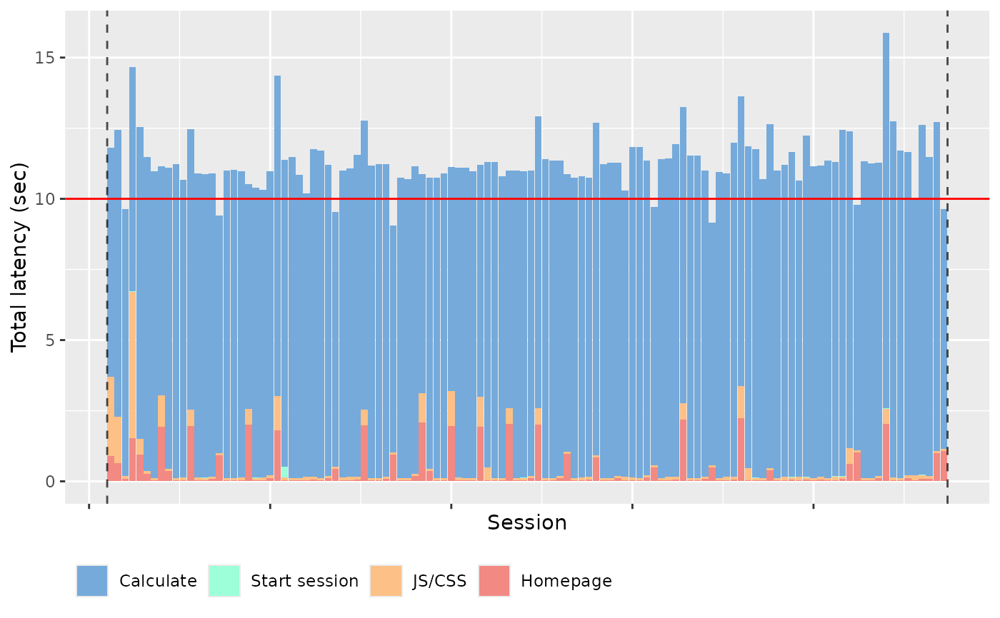
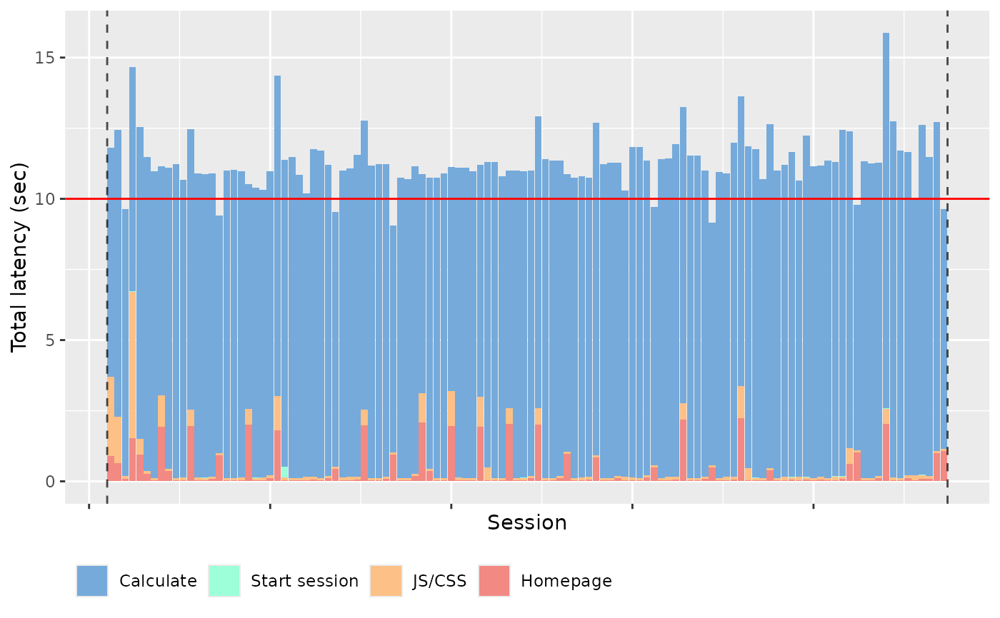
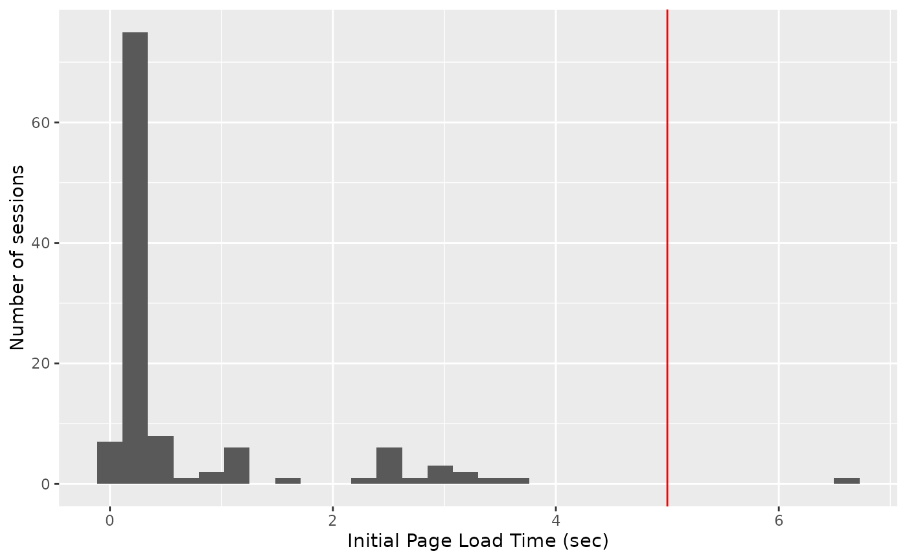
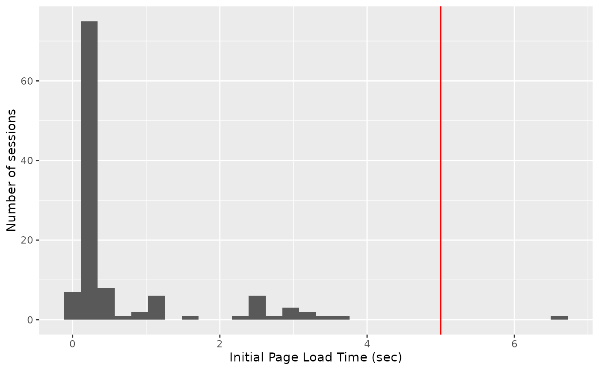

Many different plotting routines to display different loadtest information.
slt_time_boxplot(df, labels = NULL)
slt_time_concurrency(df, labels = NULL)
slt_waterfall(df, limits = NULL)
slt_hist_loadtimes(df, max_load_time = 5)
slt_user(df)
slt_session(df)
slt_session_duration(df, cutoff = NULL)
slt_session_latency(df)
slt_http_latency(df, cutoff = 5)
slt_websocket_latency(df, cutoff = 5)Arguments
- df
data frame returned from
load_runs- labels
A vector of labels to include. If none are supplied, all labels will be used.
- limits
passed into
scale_colour_gradientn- max_load_time
The amount of time users will wait for the page to load when first requesting the app.
- cutoff
Where to draw a horizontal or vertical line to display a reasonable cutoff line for requests.
Value
A ggplot plot object
Functions
slt_time_boxplot(): Box plot of load times for each event in each runslt_time_concurrency(): Time on concurrency for each event for each runslt_waterfall(): Event waterfall for each session within each runslt_hist_loadtimes(): Histogram of page load timesslt_user(): Gantt chart of event duration for each user within each runslt_session(): Event gantt chart of each user session within each runslt_session_duration(): Event gantt chart of fastest to slowest session times within each runslt_session_latency(): Stacked bar chart of event duration for each session within each runslt_http_latency(): Bar chart of total HTTP latency for each session within each runslt_websocket_latency(): Bar chart of maximum calculation (websocket) latency for each session within each run
Examples
slt_user(slt_demo_data_4)
 slt_session(slt_demo_data_4)
slt_session_duration(slt_demo_data_4)
slt_session(slt_demo_data_4)
slt_session_duration(slt_demo_data_4)
 slt_waterfall(slt_demo_data_4)
slt_time_boxplot(slt_demo_data_4)
slt_waterfall(slt_demo_data_4)
slt_time_boxplot(slt_demo_data_4)
 slt_time_concurrency(slt_demo_data_4)
slt_session_latency(slt_demo_data_4)

slt_http_latency(slt_demo_data_4)
slt_time_concurrency(slt_demo_data_4)
slt_session_latency(slt_demo_data_4)

slt_http_latency(slt_demo_data_4)
 slt_websocket_latency(slt_demo_data_4)
slt_websocket_latency(slt_demo_data_4)
 slt_hist_loadtimes(slt_demo_data_4)
#> `stat_bin()` using `bins = 30`. Pick better value with `binwidth`.

slt_hist_loadtimes(slt_demo_data_4)
#> `stat_bin()` using `bins = 30`. Pick better value with `binwidth`.
